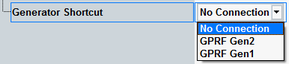
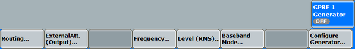

Generator Shortcut
A standard use case in "StandAlone (Non-Signaling)" mode is to use the GPRF generator to generate a signal the DUT replies to. In particular, one is interested in the DUT's reaction on varying generator signals.
To provide better support for this use case, the parameters of the GPRF generator can be set from the WLAN measurement GUI.
Select the appropriate GPRF generator instance.

When a connection to the GPRF generator instance is established, two additional softkeys (with corresponding hotkey bars) provide access to the generator configuration.

ARB / list mode: softkey and hotkey bar

GPRF<instance> generator: softkey and hotkey bar
Use the appropriate softkey/hotkey combination to access the generator parameters.
|